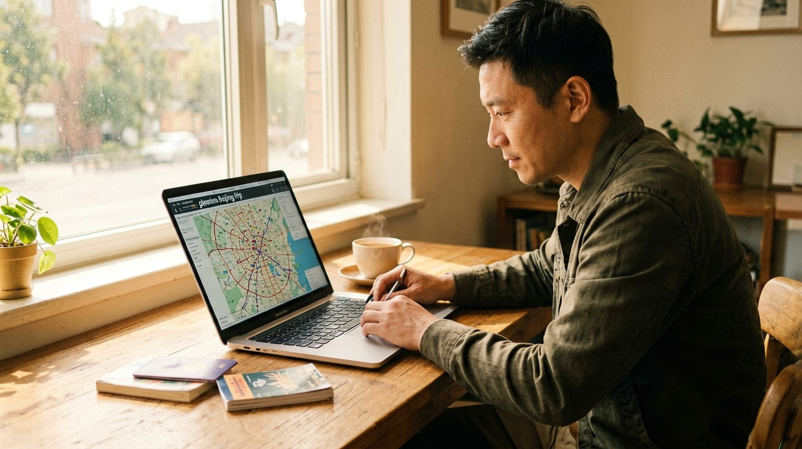
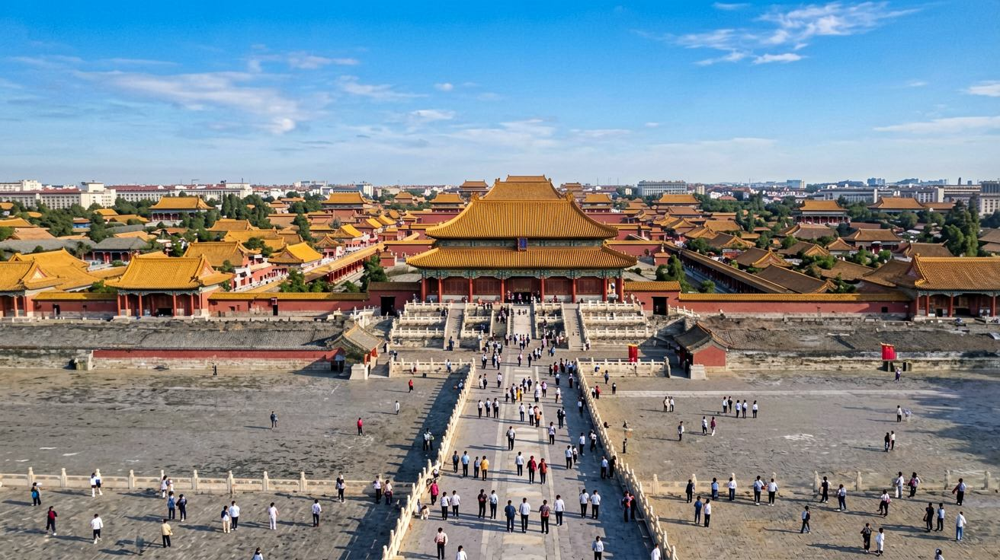
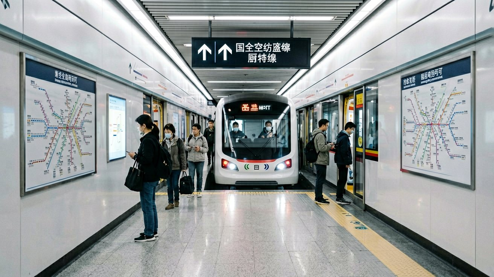
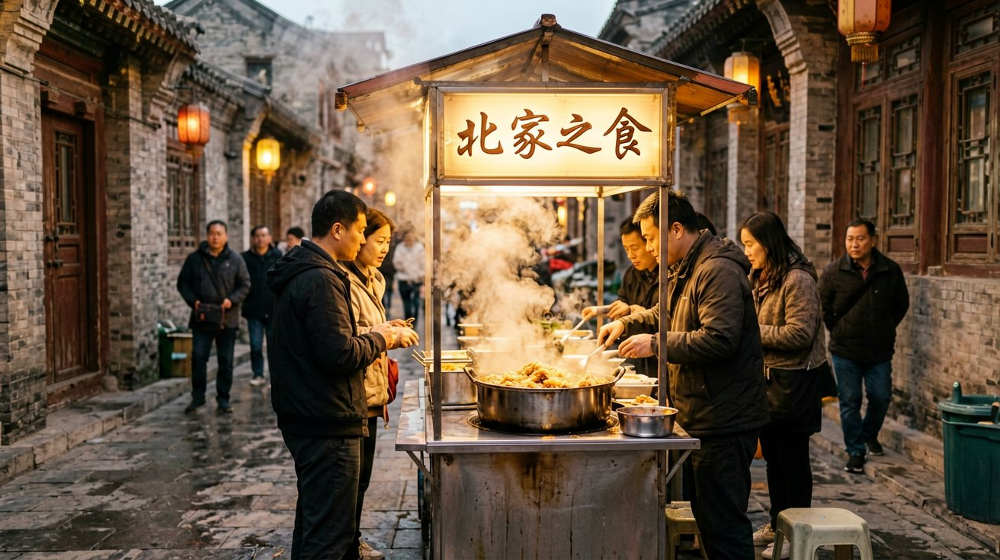

Last updated: June 2026.
Beijing is one of those cities that every traveler wants to see, but the planning often hits a wall. The challenge is not a lack of information — it is that too much of it is outdated, scattered across platforms you cannot access without a VPN, or written for domestic visitors who speak Chinese. This guide cuts through that noise. It gives you a clear, practical path from deciding when to go and what to see, to navigating the subway, booking the Forbidden City, and knowing what to eat — all based on how things actually work in 2026.

Before you book anything, get the timing right. The best months to visit Beijing are April, May, September, and October. These are the spring and autumn windows: pleasant temperatures between 15°C and 25°C (59°F to 77°F), clear skies, and comfortable walking conditions. Summer — June through August — is hot and humid, with temperatures regularly above 35°C (95°F). Winter, from November to February, is cold and dry, often dropping below freezing, but indoor attractions remain open and crowds are thinner. If you can handle the cold, winter can be a quieter, more atmospheric experience.
There are two periods you should absolutely avoid: Chinese New Year (late January to mid-February, dates shift each year) and the first week of October — China's Golden Week national holiday. During these windows, domestic travel surges, attractions are packed, and train and flight tickets sell out weeks in advance.
As for how long to stay, four full days is the practical minimum to cover the core sights without rushing. Five or six days gives you room for a Great Wall day trip, a couple of museums, and time to wander through the older hutong neighborhoods. Many visitors combine Beijing with Xi'an, Shanghai, or Chengdu in a larger itinerary — high-speed trains make these connections straightforward.
Visa-wise, check whether your nationality qualifies for China's expanded visa-free entry policy. As of early 2026, citizens from dozens of countries — including most of Europe, Australia, New Zealand, and several Asian nations — can enter China without a visa for stays of up to 30 days. If your country is not on the list, you still have options: the 144-hour (6-day) transit visa-free policy covers Beijing, letting you explore the city and the surrounding region as long as you hold a confirmed onward ticket to a third country. For the standard tourist L-Visa, see the separate visa guide on this site.

Beijing's sightseeing revolves around a handful of world-class attractions, but they all require some planning to get in. Here is what you need to know for each one.
The Forbidden City is the centerpiece of any Beijing trip and also the hardest ticket to secure. As of 2026, you cannot buy tickets at the gate — all entry is by advance reservation only. Tickets are released exactly seven days in advance at 20:00 Beijing time on the official Palace Museum website at intl.dpm.org.cn, which has an English interface. You book with your passport number and an email address. During peak months (April through October), tickets can sell out within minutes, so set a calendar reminder and be ready at your keyboard when the release window opens. The entrance fee is 60 RMB in peak season (April–October) and 40 RMB in the off-season (November–March). The museum is closed every Monday — plan your itinerary around this. Expect to spend three to four hours walking through the central axis and key side halls. Pro tip: enter through the Meridian Gate on the south side and exit through the Gate of Divine Prowess in the north, where you can climb Jingshan Park directly opposite for a panoramic view of the entire palace compound.
The Great Wall is not a single location but a series of sections, each with a different experience. Badaling is the most famous and the most accessible by public transport — direct buses and the S2 train line connect it to central Beijing — but it is also the most crowded, especially on weekends and holidays. Mutianyu, about 70 km northeast of the city, is better restored, has a cable car, and is noticeably less crowded. It also has a toboggan slide for the descent, which is genuinely fun. For serious hikers, Jinshanling and Simatai offer partially wild, unrestored sections with steep climbs and far fewer visitors — but they require a full day and are harder to reach without a car or a tour. No matter which section you choose, wear comfortable shoes with grip: even the restored sections have uneven steps and steep inclines.
The Temple of Heaven and the Summer Palace each deserve a half-day. The Temple of Heaven is best visited early in the morning, when the surrounding park fills with locals practicing tai chi, playing traditional instruments, and doing morning exercises — the atmosphere is as much the attraction as the architecture. The Summer Palace, a sprawling imperial garden with a large lake, works best on a clear afternoon when you can rent a boat or walk the Long Corridor.
Tiananmen Square sits directly south of the Forbidden City and is free to enter, but expect security checks and bring your passport. The National Museum of China, on the east side of the square, is also free but requires advance reservation through its WeChat mini-program or website. The flag-raising and flag-lowering ceremonies at dawn and dusk draw crowds — arrive at least 30 minutes early if you want a clear view.

The Beijing Subway is the backbone of getting around the city. With 27 lines covering almost every corner of the urban area, it is clean, reliable, and — crucially for visitors — all station signage and announcements are in both Chinese and English. A single ride costs between 3 and 9 RMB depending on distance, making it easily the most affordable way to move around.
Payment is straightforward if you have Alipay set up: open the app, tap the "Transport" icon, and generate a QR code that you scan at the gate. The same QR code works across buses and the subway. If you prefer not to use Alipay, every station has ticket vending machines with an English-language option that accept cash (10 and 20 RMB notes) and, at many stations, international contactless bank cards. You can also buy a Yikatong stored-value transport card at any station service counter for a 20 RMB deposit — this works on the subway, buses, and even some taxis.
For destinations not directly on a subway line, DiDi — China's equivalent of Uber — is available through the DiDi mini-program inside Alipay and WeChat. You do not need a separate app download. Enter your pickup and drop-off locations in English; the driver will likely call or message in Chinese, but the in-app translation feature handles this. Taxis are also widely available and can be hailed on the street, but drivers rarely speak English. Have your destination written in Chinese characters or show it on your phone map.
Beijing has two major airports: Beijing Capital (PEK) in the northeast and Beijing Daxing (PKX) in the south. Both are connected to the city center by the Airport Express subway line. The journey from PEK to Dongzhimen in central Beijing takes about 25 minutes and costs 25 RMB. From Daxing to Caoqiao station it takes roughly 20 minutes for 35 RMB. Avoid taxis from the airport during rush hour — Beijing traffic can turn a 30-minute drive into a 90-minute crawl.
Walking is also highly underrated in central Beijing. The area around the Forbidden City, Jingshan Park, and the Houhai lakes is compact and pedestrian-friendly. A walk through the hutong alleyways — narrow lanes lined with traditional courtyard homes — gives you a view of the city that no subway ride can match.

Beijing's accommodation is spread across several distinct areas, and picking the right one shapes your daily experience. Dongcheng District — the area around Wangfujing, Dengshikou, and the Forbidden City — puts you within walking distance of the core attractions. Hotels here range from international chains to mid-range Chinese brands. Gulou and the Houhai lake area give you the hutong experience: narrow lanes, courtyard hotels, rooftop bars, and a more local feel. This area is ideal if you want atmosphere over convenience — the nearest subway station may be a 10-minute walk. Sanlitun, in the east, is the expat and nightlife hub, dense with international restaurants, bars, and shopping. If you want familiar food and a more relaxed language environment, this is your pick. Haidian, in the northwest near the university district and the Summer Palace, is quieter and cheaper, but farther from the city center.
Book through Trip.com — it has the widest selection of hotels that are licensed to accept guests with foreign passports. Not every hotel in China can legally host international visitors; properties must hold a "涉外" (shewai, meaning foreign-guest) license. Trip.com explicitly filters for these properties. For peak travel periods — especially the first week of October and Chinese New Year — book at least three to four weeks ahead.
Food in Beijing is a highlight, not an afterthought. Peking duck is the city's most famous dish — Quanjude and Siji Minfu are the established names, but smaller neighborhood roast duck restaurants often deliver comparable quality at half the price. Zhajiangmian — thick wheat noodles topped with a fermented soybean paste and shredded vegetables — is Beijing's everyday comfort food and costs as little as 15 RMB a bowl. Dumplings (jiaozi) are everywhere, from hole-in-the-wall shops to dedicated dumpling restaurants where you watch them being rolled and folded by hand.
For a concentrated food experience, head to Guijie (Ghost Street) on Dongzhimen Inner Street — a 1.5-kilometer stretch lined with restaurants that stay open past midnight, specializing in Sichuan hot pot, crayfish, and barbecue skewers. During the day, the Niujie Muslim quarter in the south offers some of the city's best lamb dishes, sesame cakes, and freshly pulled noodles. If you want to sample a bit of everything in one go, the food court on the top floor of any major shopping mall usually has 20 to 30 vendors serving regional Chinese dishes — clean, affordable, and ordering by pointing at pictures works fine.
A few practical realities make the difference between a smooth trip and a frustrating one. Take them seriously.
Payments. Beijing is essentially a cashless city. Mobile payment through Alipay or WeChat Pay is the default — from street food stalls and subway gates to major museums and hotels. You can link an international Visa or Mastercard to Alipay before you arrive; the setup takes about 15 minutes and requires passport verification through the app. Once linked, you simply scan a QR code at the register. ATMs that accept foreign cards exist but are not everywhere, and some smaller shops and restaurants have no way to process international cards or cash. Set up Alipay before you leave home — it is the single most useful thing you can do for your trip.
Internet access. Google, WhatsApp, Instagram, Gmail, Google Maps, and most Western platforms are blocked in China. You need a VPN installed and tested on your phone and laptop before you arrive — downloading one inside China is extremely difficult. Choose a VPN known to work reliably inside China (Astrill and LetsVPN have the strongest track record as of mid-2026) and subscribe before your trip. An eSIM with roaming data from providers like Holafly or Airalo gives you unfiltered internet without needing a VPN, but only for data — your phone number does not change, so SMS-based verification still uses your home number.
Reservations. This cannot be stressed enough: almost every major attraction in Beijing now requires advance booking. The Forbidden City, the National Museum, and several popular parks all operate on a reservation system tied to your passport number. Visit the official website or WeChat mini-program of each attraction at least a week before your planned visit. If you show up without a reservation, you will be turned away — no exceptions.
Carry your passport at all times. You need it to enter attractions, buy tickets, check into hotels, and occasionally for random security checks at subway stations. A photo on your phone is not accepted as a substitute — bring the physical document.
Dress for a lot of walking. Beijing's attractions are enormous. A visit to the Forbidden City alone involves several kilometers of walking on stone courtyards. Comfortable, broken-in shoes are non-negotiable. In summer, bring a hat, sunscreen, and water — shaded areas are scarce at the Great Wall and in the Forbidden City courtyards. In winter, layers and a windproof outer shell are essential — Beijing's winter wind cuts through light jackets fast.
Public toilets and air quality. Public restrooms in tourist areas are generally clean and well-maintained, but carry your own tissues and hand sanitizer — soap and toilet paper are not guaranteed. Air quality has improved significantly in recent years, but high-pollution days still happen, particularly in winter. Check the AQI on your phone's weather app and bring an N95 mask if the index exceeds 150.
Beijing rewards preparation. Book your core tickets before you leave home, set up your payment app, and test your VPN — then once you land, you can focus on what matters: walking through a 600-year-old palace, eating dumplings in a hutong alley, and standing on a watchtower of the Great Wall looking out over the mountains. The planning is the price of entry. What comes after is worth it. For more practical help with payment setup, getting online, and navigating high-speed trains to other Chinese cities, check the guides in the Payment and Transportation sections of this site.
This article is based on information as of June 2026.
Sources
Policies, ticket systems, and opening hours may change. Verify the latest information before your trip.